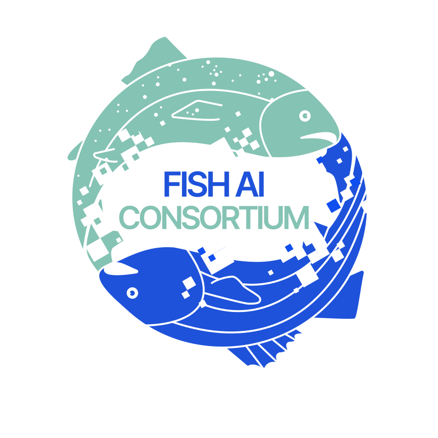
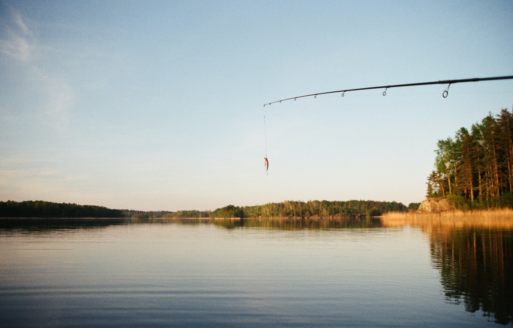

The Fish AI Consortium is a global network of individuals and organisations advancing artificial intelligence based image analysis to study fish population management, ecology, and conservation. We believe that AI has the potential to revolutionise the way we study, manage and protect fish populations in freshwater and marine ecosystems worldwide. By sharing resources, images, data and expertise, we aim to make a significant impact on the future of Earth’s aquatic ecosystems.
Our goals
Develop AI-powered tools that can accurately identify fish to species, measure fish and identify individual fish from photos and videos.
Expand the data available to fisheries managers and scientists by developing AI enhanced tools that allow image based data collection by recreational anglers, commercial fisheries, community scientists and researchers.
Make AI resources more accessible for research and management, by developing user friendly image analyses applications and providing information and training.
Increase cross-disciplinary collaboration among fish biologists, fisheries researchers, computer scientists and conservation practitioners.
Apply image based AI tools to address the challenges facing fish populations, such as overfishing, habitat loss and climate change.


Activities
Identify and collaborate across the range of image based fish AI focused projects worldwide
Share resources such as software and trained models
Share data, including photos and videos of fish
Create a public bank of images and videos for AI model training
Share experiences and skills on common challenges
Run educational events (seminars, workshops, training courses) on image based fish AI tools
Apply for funding for joined activities and networking
Cross-test different AI models and learning resources
Develop user-friendly tools for broad application of AI based models

Who are we
Fish AI Consortium involves a large group of people globally and is guided by a group of board members that includes world-renowned experts in the fields of artificial intelligence, fish population management, ecology and conservation.
Supporters
Contact us
If you would like to learn more about our work or join the consortium, please contact us using the form below.